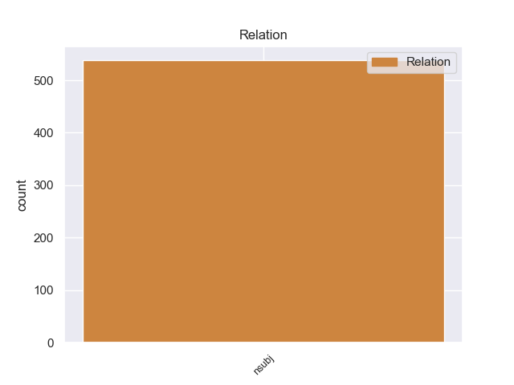
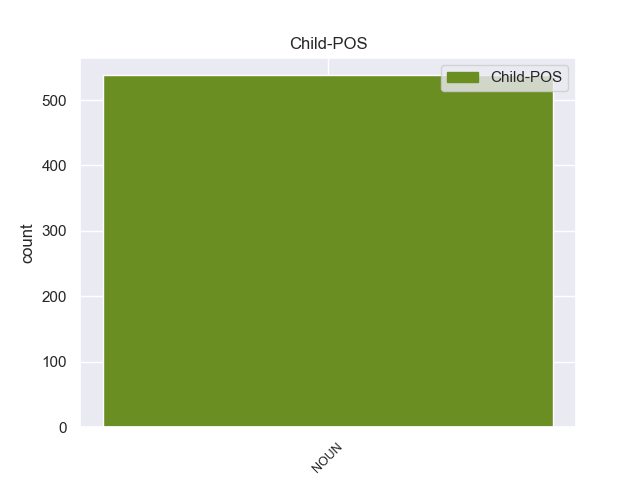

Distribution of features within this leaf



Agreement Rules sorted by frequency.
- When the dependent token is the nominal subject(nsubj) of the head token, and the dependent token is NOUN.
1 Μια _ _ _ _ 0 _ _ _
2 δημόσια _ _ _ _ 0 _ _ _
3 σύμβαση σύμβαση NOUN _ Gender=Fem|Number=Sing 7 nsubj _ _
4 δεν _ _ _ _ 0 _ _ _
5 μπορεί _ _ _ _ 0 _ _ _
6 να _ _ _ _ 0 _ _ _
7 περιλαμβάνει περιλαμβάνειr VERB _ Mood=Ind|Number=Sing|Person=3|Tense=Pres|VerbForm=Fin 0 _ _ _
8 την _ _ _ _ 0 _ _ _
9 απαίτηση _ _ _ _ 0 _ _ _
10 από _ _ _ _ 0 _ _ _
11 τους _ _ _ _ 0 _ _ _
12 κατασκευαστές _ _ _ _ 0 _ _ _
13 λεωφορείων _ _ _ _ 0 _ _ _
14 να _ _ _ _ 0 _ _ _
15 κάνουν _ _ _ _ 0 _ _ _
16 περιβαλλοντική _ _ _ _ 0 _ _ _
17 εκτίμηση _ _ _ _ 0 _ _ _
18 για _ _ _ _ 0 _ _ _
19 το _ _ _ _ 0 _ _ _
20 Ελσίνκι _ _ _ _ 0 _ _ _
21 πριν _ _ _ _ 0 _ _ _
22 να _ _ _ _ 0 _ _ _
23 υποβάλλουν _ _ _ _ 0 _ _ _
24 τη _ _ _ _ 0 _ _ _
25 σύμβαση _ _ _ _ 0 _ _ _
26 . _ _ _ _ 0 _ _ _
Disagree Examples:
1 Un _ _ _ _ 0 _ _ _
2 observador _ _ _ _ 0 _ _ _
3 externo _ _ _ _ 0 _ _ _
4 puede _ _ _ _ 0 _ _ _
5 tomar _ _ _ _ 0 _ _ _
6 directamente _ _ _ _ 0 _ _ _
7 las _ _ _ _ 0 _ _ _
8 medidas _ _ _ _ 0 _ _ _
9 nomotéticas _ _ _ _ 0 _ _ _
10 ( _ _ _ _ 0 _ _ _
11 ejemplos ejemplo NOUN _ Gender=Masc|Number=Plur 18 nsubj _ _
12 de _ _ _ _ 0 _ _ _
13 éstas _ _ _ _ 0 _ _ _
14 medidas _ _ _ _ 0 _ _ _
15 pueden _ _ _ _ 0 _ _ _
16 ser _ _ _ _ 0 _ _ _
17 el _ _ _ _ 0 _ _ _
18 peso peso NOUN _ Gender=Masc|Number=Sing 0 _ _ _
19 de _ _ _ _ 0 _ _ _
20 un _ _ _ _ 0 _ _ _
21 objeto _ _ _ _ 0 _ _ _
22 o _ _ _ _ 0 _ _ _
23 la _ _ _ _ 0 _ _ _
24 cantidad _ _ _ _ 0 _ _ _
25 de _ _ _ _ 0 _ _ _
26 veces _ _ _ _ 0 _ _ _
27 que _ _ _ _ 0 _ _ _
28 se _ _ _ _ 0 _ _ _
29 presenta _ _ _ _ 0 _ _ _
30 un _ _ _ _ 0 _ _ _
31 comportamiento _ _ _ _ 0 _ _ _
32 particular _ _ _ _ 0 _ _ _
33 ) _ _ _ _ 0 _ _ _
34 ; _ _ _ _ 0 _ _ _
1 Aunque _ _ _ _ 0 _ _ _
2 Stevenson _ _ _ _ 0 _ _ _
3 había _ _ _ _ 0 _ _ _
4 sido _ _ _ _ 0 _ _ _
5 el _ _ _ _ 0 _ _ _
6 candidato _ _ _ _ 0 _ _ _
7 presidencial _ _ _ _ 0 _ _ _
8 de _ _ _ _ 0 _ _ _
9 el _ _ _ _ 0 _ _ _
10 Partido _ _ _ _ 0 _ _ _
11 Demócrata _ _ _ _ 0 _ _ _
12 en _ _ _ _ 0 _ _ _
13 1952 _ _ _ _ 0 _ _ _
14 y _ _ _ _ 0 _ _ _
15 1956 _ _ _ _ 0 _ _ _
16 y _ _ _ _ 0 _ _ _
17 todavía _ _ _ _ 0 _ _ _
18 mantenía _ _ _ _ 0 _ _ _
19 un _ _ _ _ 0 _ _ _
20 público _ _ _ _ 0 _ _ _
21 fiel _ _ _ _ 0 _ _ _
22 de _ _ _ _ 0 _ _ _
23 liberales _ _ _ _ 0 _ _ _
24 e _ _ _ _ 0 _ _ _
25 intelectuales _ _ _ _ 0 _ _ _
26 , _ _ _ _ 0 _ _ _
27 sus _ _ _ _ 0 _ _ _
28 dos _ _ _ _ 0 _ _ _
29 aplastantes _ _ _ _ 0 _ _ _
30 derrotas derrota NOUN _ Gender=Fem|Number=Plur 36 nsubj _ _
31 ante _ _ _ _ 0 _ _ _
32 el _ _ _ _ 0 _ _ _
33 republicano _ _ _ _ 0 _ _ _
34 Dwight _ _ _ _ 0 _ _ _
35 Eisenhower _ _ _ _ 0 _ _ _
36 llevó llevar VERB _ Mood=Ind|Number=Sing|Person=3|Tense=Past|VerbForm=Fin 0 _ _ _
37 a _ _ _ _ 0 _ _ _
38 los _ _ _ _ 0 _ _ _
39 jefes _ _ _ _ 0 _ _ _
40 de _ _ _ _ 0 _ _ _
41 el _ _ _ _ 0 _ _ _
42 partido _ _ _ _ 0 _ _ _
43 a _ _ _ _ 0 _ _ _
44 una _ _ _ _ 0 _ _ _
45 búsqueda _ _ _ _ 0 _ _ _
46 de _ _ _ _ 0 _ _ _
47 una _ _ _ _ 0 _ _ _
48 " _ _ _ _ 0 _ _ _
49 cara _ _ _ _ 0 _ _ _
50 fresca _ _ _ _ 0 _ _ _
51 " _ _ _ _ 0 _ _ _
52 que _ _ _ _ 0 _ _ _
53 había _ _ _ _ 0 _ _ _
54 una _ _ _ _ 0 _ _ _
55 mejor _ _ _ _ 0 _ _ _
56 oportunidad _ _ _ _ 0 _ _ _
57 de _ _ _ _ 0 _ _ _
58 de _ _ _ _ 0 _ _ _
59 ganar _ _ _ _ 0 _ _ _
60 las _ _ _ _ 0 _ _ _
61 elecciones _ _ _ _ 0 _ _ _
62 generales _ _ _ _ 0 _ _ _
63 de _ _ _ _ 0 _ _ _
64 noviembre _ _ _ _ 0 _ _ _
65 . _ _ _ _ 0 _ _ _
1 -- _ _ _ _ 0 _ _ _
2 Las _ _ _ _ 0 _ _ _
3 economías economía NOUN _ Gender=Fem|Number=Plur 6 nsubj _ _
4 mundiales _ _ _ _ 0 _ _ _
5 han _ _ _ _ 0 _ _ _
6 pasado pasar VERB _ Gender=Masc|Number=Sing|Tense=Past|VerbForm=Part 0 _ _ _
7 de _ _ _ _ 0 _ _ _
8 producir _ _ _ _ 0 _ _ _
9 y _ _ _ _ 0 _ _ _
10 elaborar _ _ _ _ 0 _ _ _
11 materias _ _ _ _ 0 _ _ _
12 primas _ _ _ _ 0 _ _ _
13 a _ _ _ _ 0 _ _ _
14 tener _ _ _ _ 0 _ _ _
15 un _ _ _ _ 0 _ _ _
16 sistema _ _ _ _ 0 _ _ _
17 financiero _ _ _ _ 0 _ _ _
18 " _ _ _ _ 0 _ _ _
19 ficticio _ _ _ _ 0 _ _ _
20 y _ _ _ _ 0 _ _ _
21 especulativo _ _ _ _ 0 _ _ _
22 " _ _ _ _ 0 _ _ _
23 a _ _ _ _ 0 _ _ _
24 través _ _ _ _ 0 _ _ _
25 de _ _ _ _ 0 _ _ _
26 internet _ _ _ _ 0 _ _ _
27 , _ _ _ _ 0 _ _ _
28 advirtió _ _ _ _ 0 _ _ _
29 hoy _ _ _ _ 0 _ _ _
30 aquí _ _ _ _ 0 _ _ _
31 el _ _ _ _ 0 _ _ _
32 empresario _ _ _ _ 0 _ _ _
33 español _ _ _ _ 0 _ _ _
34 Antonio _ _ _ _ 0 _ _ _
35 Calvo _ _ _ _ 0 _ _ _
36 . _ _ _ _ 0 _ _ _
1 La _ _ _ _ 0 _ _ _
2 riqueza riqueza NOUN _ Gender=Fem|Number=Sing 7 nsubj _ _
3 de _ _ _ _ 0 _ _ _
4 dichos _ _ _ _ 0 _ _ _
5 armónicos _ _ _ _ 0 _ _ _
6 , _ _ _ _ 0 _ _ _
7 producen producir VERB _ Mood=Ind|Number=Plur|Person=3|Tense=Pres|VerbForm=Fin 0 _ _ _
8 la _ _ _ _ 0 _ _ _
9 característica _ _ _ _ 0 _ _ _
10 tímbrica _ _ _ _ 0 _ _ _
11 de _ _ _ _ 0 _ _ _
12 cada _ _ _ _ 0 _ _ _
13 instrumento _ _ _ _ 0 _ _ _
14 y _ _ _ _ 0 _ _ _
15 es _ _ _ _ 0 _ _ _
16 ésta _ _ _ _ 0 _ _ _
17 la _ _ _ _ 0 _ _ _
18 que _ _ _ _ 0 _ _ _
19 nos _ _ _ _ 0 _ _ _
20 ayuda _ _ _ _ 0 _ _ _
21 a _ _ _ _ 0 _ _ _
22 reconocer _ _ _ _ 0 _ _ _
23 los _ _ _ _ 0 _ _ _
24 distintos _ _ _ _ 0 _ _ _
25 instrumentos _ _ _ _ 0 _ _ _
26 musicales _ _ _ _ 0 _ _ _
27 . _ _ _ _ 0 _ _ _
1 Se _ _ _ _ 0 _ _ _
2 estaba _ _ _ _ 0 _ _ _
3 comenzando _ _ _ _ 0 _ _ _
4 a _ _ _ _ 0 _ _ _
5 formar _ _ _ _ 0 _ _ _
6 la _ _ _ _ 0 _ _ _
7 banda _ _ _ _ 0 _ _ _
8 , _ _ _ _ 0 _ _ _
9 desde _ _ _ _ 0 _ _ _
10 las _ _ _ _ 0 _ _ _
11 primeras _ _ _ _ 0 _ _ _
12 zapadas _ _ _ _ 0 _ _ _
13 el _ _ _ _ 0 _ _ _
14 Pety _ _ _ _ 0 _ _ _
15 decidió _ _ _ _ 0 _ _ _
16 colgar _ _ _ _ 0 _ _ _
17 se _ _ _ _ 0 _ _ _
18 el _ _ _ _ 0 _ _ _
19 bajo _ _ _ _ 0 _ _ _
20 y _ _ _ _ 0 _ _ _
21 entre _ _ _ _ 0 _ _ _
22 covers _ _ _ _ 0 _ _ _
23 de _ _ _ _ 0 _ _ _
24 The _ _ _ _ 0 _ _ _
25 Rolling _ _ _ _ 0 _ _ _
26 Stones _ _ _ _ 0 _ _ _
27 principalmente _ _ _ _ 0 _ _ _
28 y _ _ _ _ 0 _ _ _
29 de _ _ _ _ 0 _ _ _
30 otras _ _ _ _ 0 _ _ _
31 bandas _ _ _ _ 0 _ _ _
32 , _ _ _ _ 0 _ _ _
33 La _ _ _ _ 0 _ _ _
34 Mocosa _ _ _ _ 0 _ _ _
35 comenzó _ _ _ _ 0 _ _ _
36 a _ _ _ _ 0 _ _ _
37 tener _ _ _ _ 0 _ _ _
38 forma _ _ _ _ 0 _ _ _
39 , _ _ _ _ 0 _ _ _
40 muchos _ _ _ _ 0 _ _ _
41 ensayos ensayo NOUN _ Gender=Masc|Number=Plur 49 nsubj _ _
42 y _ _ _ _ 0 _ _ _
43 la _ _ _ _ 0 _ _ _
44 creación _ _ _ _ 0 _ _ _
45 de _ _ _ _ 0 _ _ _
46 temas _ _ _ _ 0 _ _ _
47 propios _ _ _ _ 0 _ _ _
48 los _ _ _ _ 0 _ _ _
49 llevó llevar VERB _ Mood=Ind|Number=Sing|Person=3|Tense=Past|VerbForm=Fin 0 _ _ _
50 en _ _ _ _ 0 _ _ _
51 septiembre _ _ _ _ 0 _ _ _
52 de _ _ _ _ 0 _ _ _
53 2000 _ _ _ _ 0 _ _ _
54 a _ _ _ _ 0 _ _ _
55 su _ _ _ _ 0 _ _ _
56 primera _ _ _ _ 0 _ _ _
57 presentación _ _ _ _ 0 _ _ _
58 en _ _ _ _ 0 _ _ _
59 " _ _ _ _ 0 _ _ _
60 La _ _ _ _ 0 _ _ _
61 Biblioteca _ _ _ _ 0 _ _ _
62 " _ _ _ _ 0 _ _ _
63 un _ _ _ _ 0 _ _ _
64 reducto _ _ _ _ 0 _ _ _
65 de _ _ _ _ 0 _ _ _
66 el _ _ _ _ 0 _ _ _
67 oeste _ _ _ _ 0 _ _ _
68 de _ _ _ _ 0 _ _ _
69 el _ _ _ _ 0 _ _ _
70 Gran _ _ _ _ 0 _ _ _
71 Buenos _ _ _ _ 0 _ _ _
72 Aires _ _ _ _ 0 _ _ _
73 , _ _ _ _ 0 _ _ _
74 precisamente _ _ _ _ 0 _ _ _
75 Morón _ _ _ _ 0 _ _ _
76 . _ _ _ _ 0 _ _ _